Está previsto que en el transcurso del día el gabinete de Mori decida formalmente el 25 de junio como la fecha para los comicios , que serán las primeras elecciones generales desde octubre de 1996.
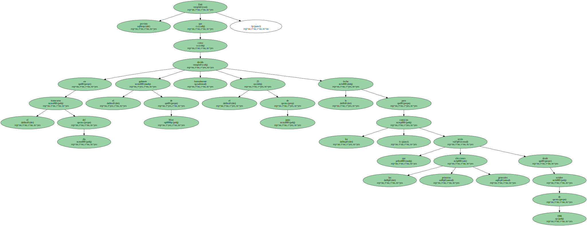La campaña oficial de doce días comenzará el 13 de junio.
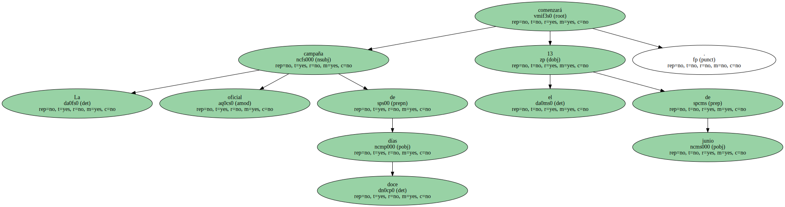Los tres partidos de la coalición gubernamental ( el Liberal Demócrata , Nuevo Conservador y Nuevo Komeito ) poseen 336 escaños en la cámara de Diputados y se espera que retengan la mayoría , aunque podrían no renovar su cómoda mayoría absoluta de la actualidad.
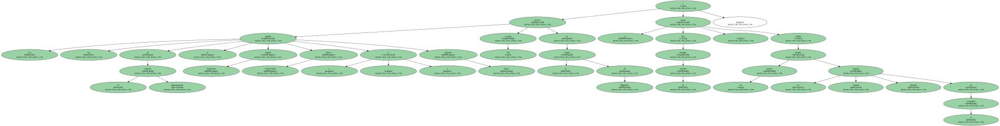En las próximas elecciones el hemiciclo reducirá de 500 a 480 el número de asientos tras aprobarse , en febrero , la supresión de 20 escaños de representación proporcional , uno de los dos que componen el sistema electoral japonés.
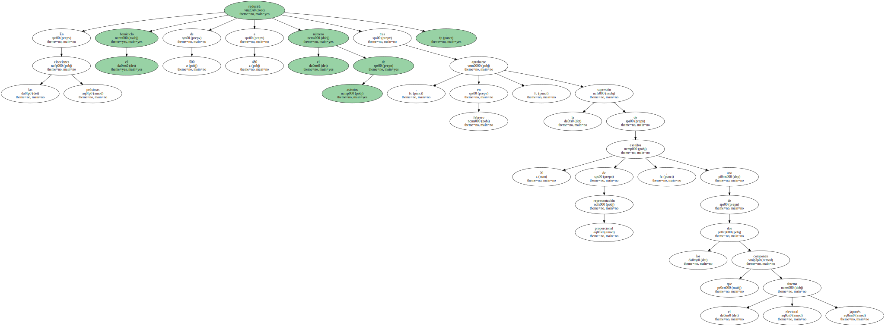Más de 1.200 candidatos se presentarán a las elecciones , cuya celebración coincidirá con los 63 años de edad que cumpliría el ex primer ministro Keizo Obuchi , fallecido el 14 de mayo víctima de una hemorragia cerebral.

La coalición de Mori , quien soporta una caída fulminante de popularidad en sus escasos dos primeros meses en el cargo , renovará su compromiso con la recuperación económica del país , mientras que la oposición atacará a Mori por sus controvertidos comentarios tachados de anticonstitucionales.
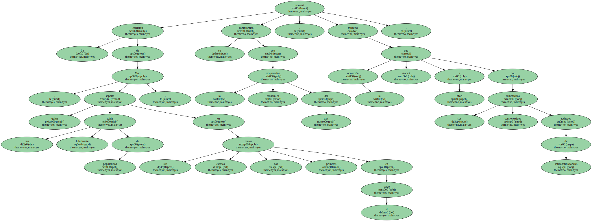El Kremlin anunció hoy oficialmente el próximo viaje a España del presidente ruso , Vladímir Putin , invitado por el Rey Juan Carlos I.
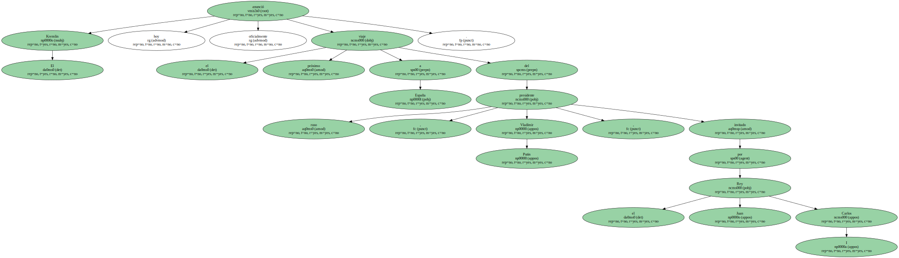La visita oficial , en la primera gira del nuevo presidente de Rusia al extranjero , tendrá lugar los próximos días 13 y 14 , de acuerdo con el comunicado oficial.
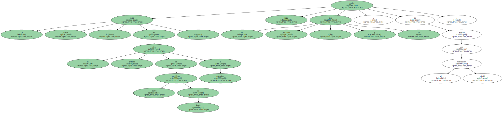La nota informó de que el programa de la estancia de Putin en Madrid incluirá una audiencia con el Rey y negociaciones con el presidente del Gobierno , José María Aznar , " sobre la problemática internacional y las relaciones bilaterales ".
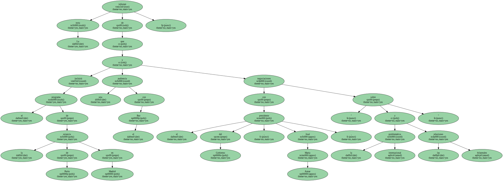Las reuniones del Presidente ruso con sus interlocutores en España ayudarán , según el comunicado , " al establecimiento de un orden multipolar , y a la estabilidad y prosperidad de Europa ".
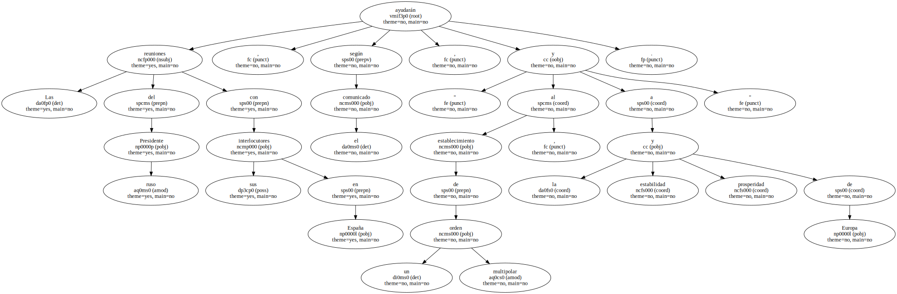Putin también se entrevistará con los portavoces de los grupos parlamentarios del Congreso y con representantes de círculos empresariales.
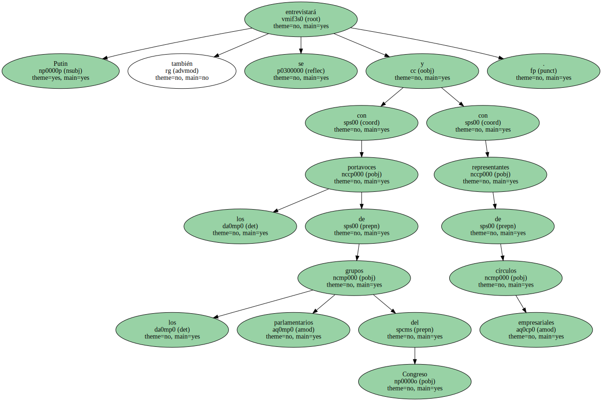" El encuentro ruso-español a alto nivel servirá para el posterior fortalecimiento de las tradicionales relaciones entre las partes , impulsará de modo práctico la cooperación en diferentes campos y fortalecerá la interrelación de cuestiones actuales europeas e internacionales " , añade el comunicado.
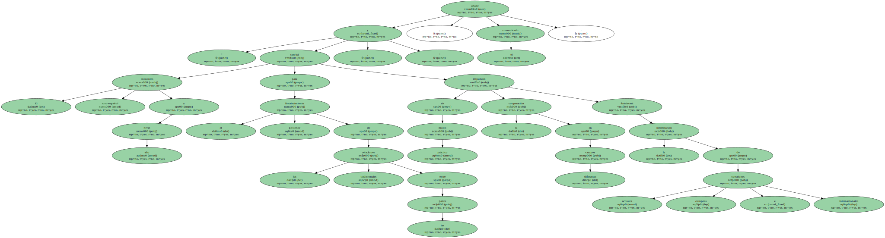La central neozelandesa de trabajadores ( CTU ) , con 200.000 afiliados y que agrupa a los sindicatos de este país , ha decidido hoy iniciar un boicot comercial y turístico contra Fiyi para lograr el restablecimiento de la democracia constitucional en ese país.
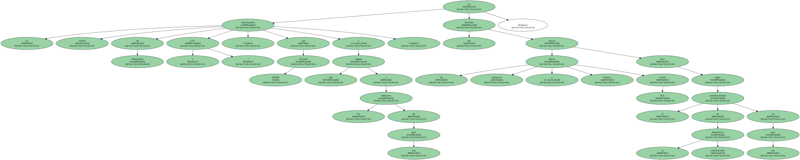La decisión surge en respuesta a la intentona golpista que intenta consolidar el empresario fiyiano George Speight , quien hace dos semanas entró con seis hombres armados en el Parlamento y secuestró al Gobierno y varios diputados.
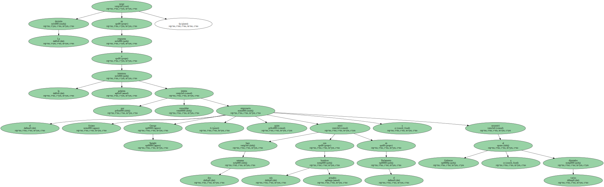Entre las propuestas de la CTU destacan la suspensión del transporte de productos entre ambos países y que se paralice la actividad comercial que las empresas neozelandesas mantienen con Fiyi.
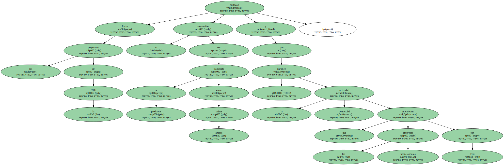También se ha decidido eliminar a Fiyi como objetivo turístico , por lo que se propone tanto a las compañías del ramo como a los medios de comunicación que dejen de promover Fiji como destino vacacional , así como la suspensión de las actividades deportivas entre los dos estados.
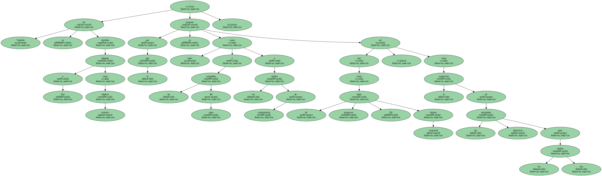La CTU también ha abierto una colecta de fondos para apoyar el congreso gremial de Fiyi organizado por la Unión de Sindicatos de Fiyi ( FTU , siglas en inglés ).
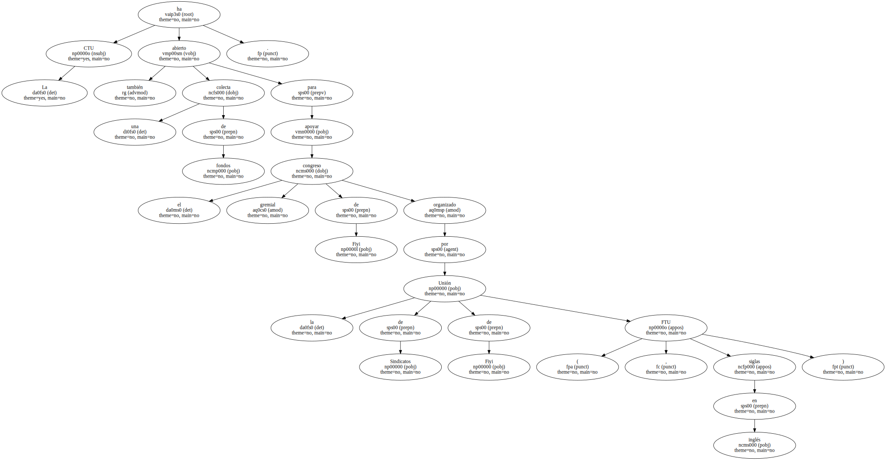" Trabajamos en colaboración con la FTU , la comunidad fiyiana en Nueva Zelanda y con otras organizaciones sindicales internacionales para ejercer una presión que implique el regreso de la democracia a Fiyi " , dijo el presidente de la CTU , Ross Wilson.
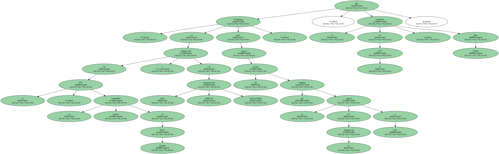Wilson agregó que " todos los neozelandeses condenan la acción de los golpistas y el chantaje que realizan con la vida de los cautivos para forzar el derrocamiento de un gobierno elegido democráticamente ".
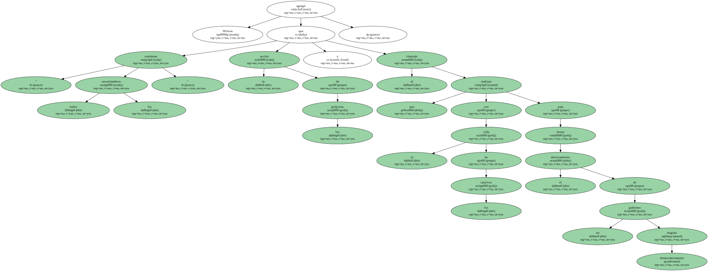Por su parte , y ante las noticias de un posible acuerdo entre Speight y las Fuerzas Armadas fiyianas , que ahora controlan el poder , el ministro de exteriores de Nueva Zelanda , Phil Goff , ha declarado que su Gobierno " no reconocerá un sistema ilegítimo en el que participen elementos terroristas ".
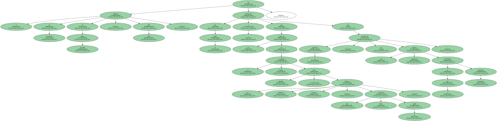El 66 por ciento de los israelíes apoya la candidatura del veterano dirigente laborista Simón Peres para nuevo presidente , que será elegido por el Parlamento ( Knéset ) el próximo 31 de julio , según un sondeo que se dio a conocer hoy.

El otro candidato a presidente , el derechista Moshé Katsav , es respaldado por sólo el 19 por ciento de los israelíes , de acuerdo con el sondeo que publica hoy viernes el diario independiente " Yediot Ajronot " de Tel Aviv.
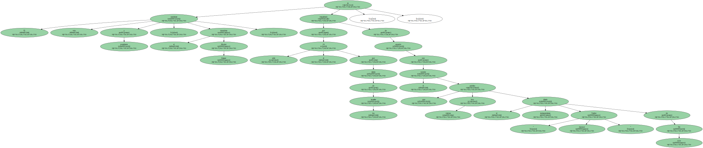La elección de un nuevo presidente por parte del Parlamento israelí se decidió después de que el actual jefe de Estado , el también laborista Ezer Weizman , anunciara el pasado fin de semana que dimitirá a más tardar el próximo 10 de julio.
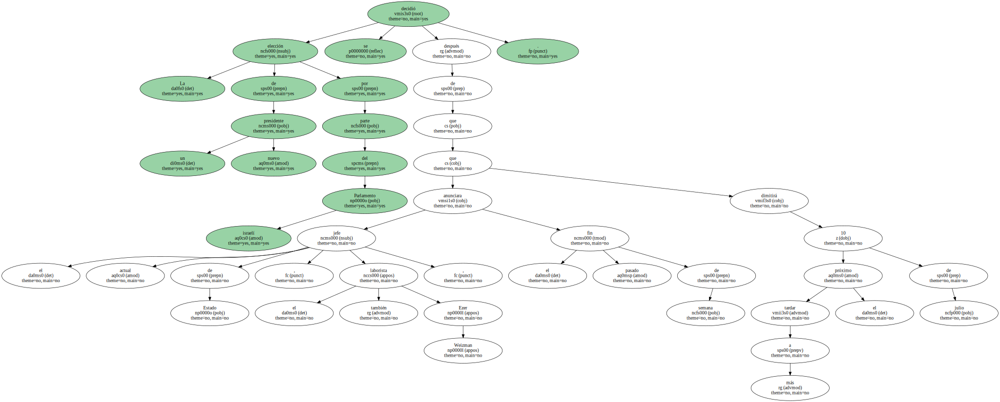